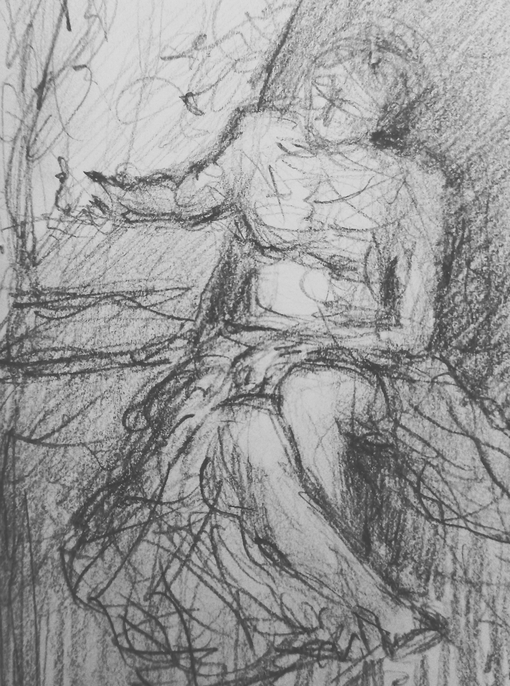
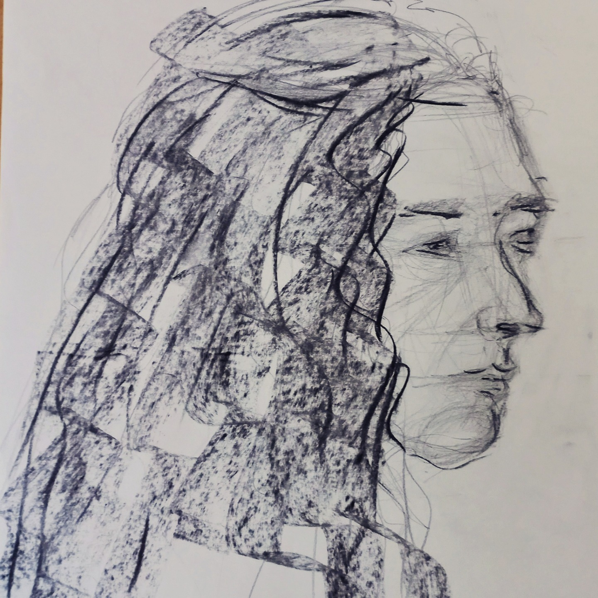
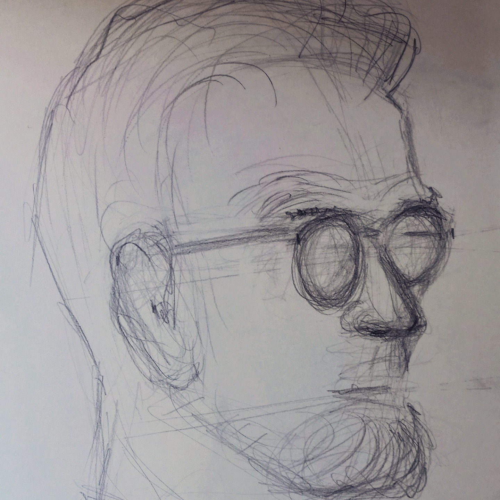
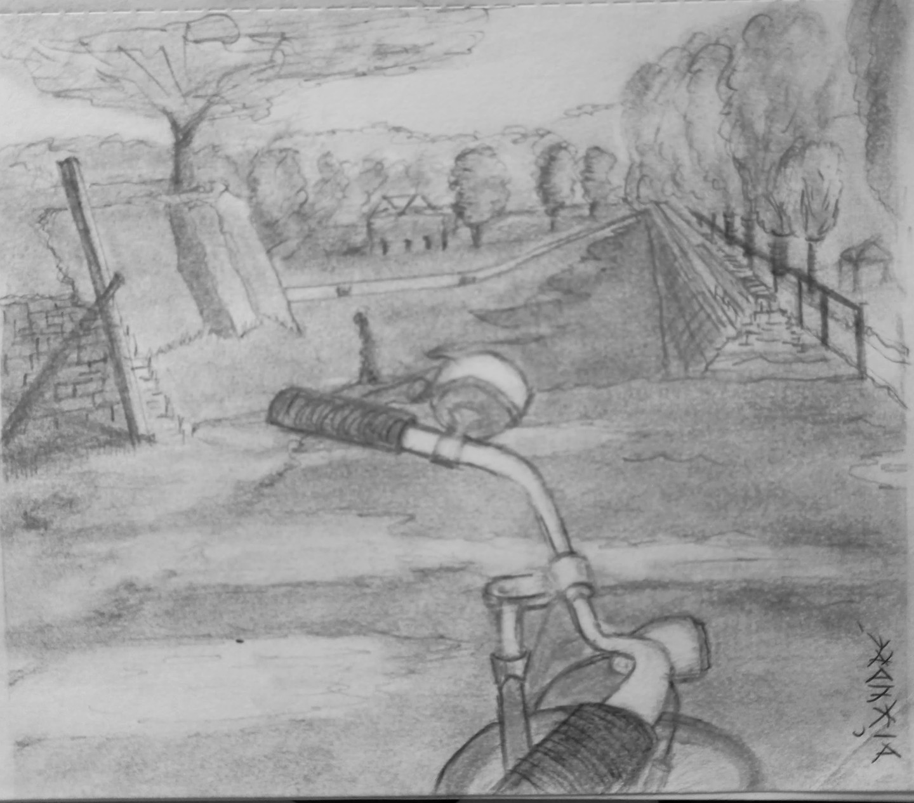
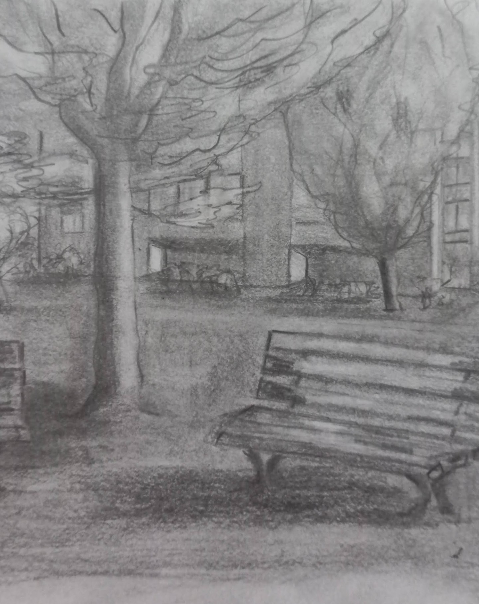
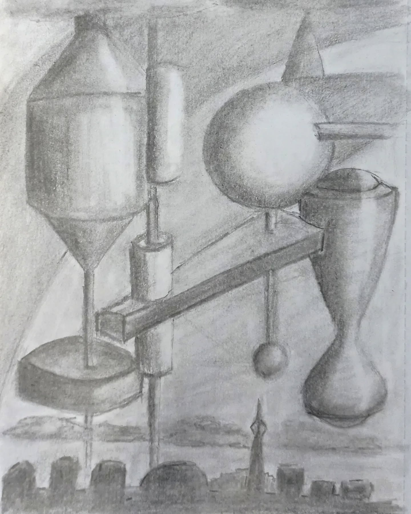
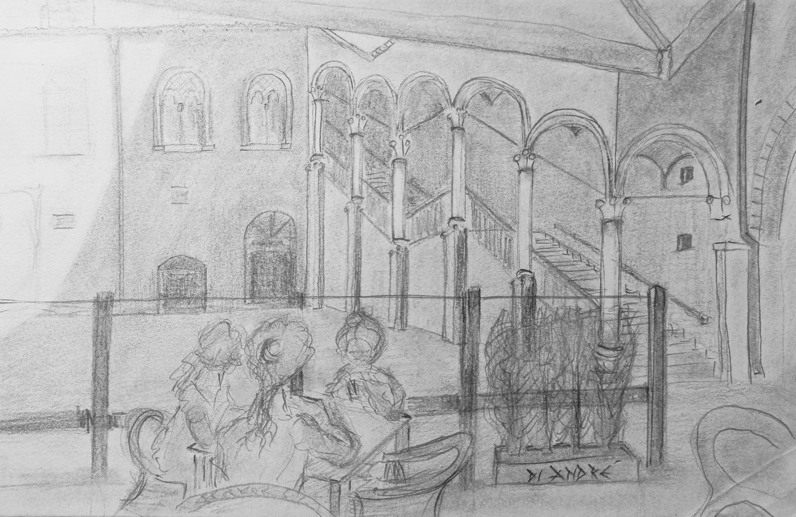
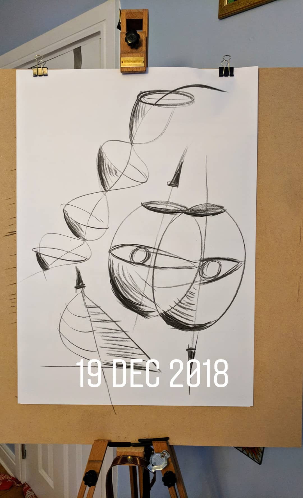
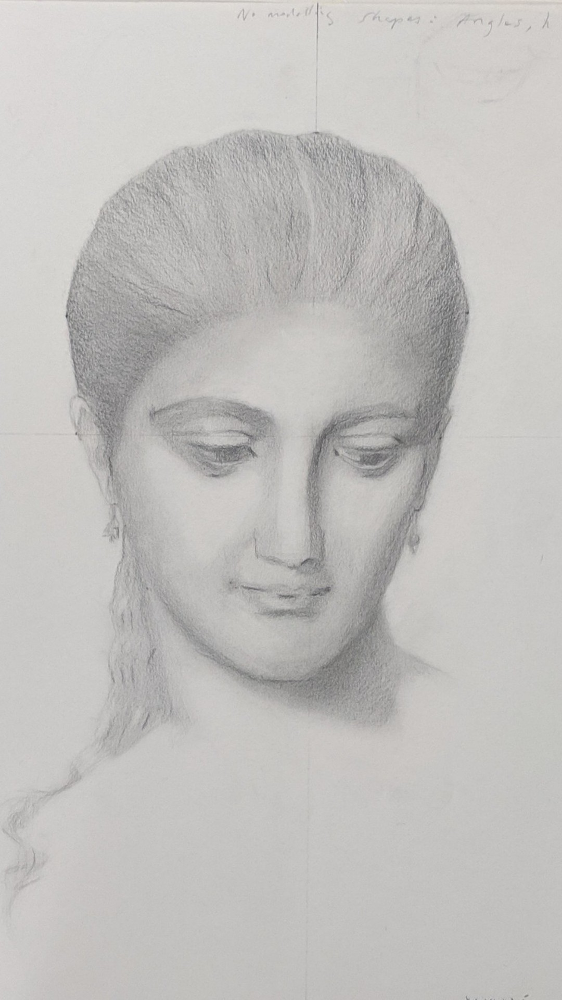

Drawing and observation
Drawings
Portraits, coastal studies, botanical works and other drawings.
61 works
08 img 20190528 213752 2 edited Drawing · Other drawings
 Night street / architectural drawing
Night street / architectural drawing
 Drawings work 017
Drawings work 017
 1 2
1 2
 Drawings work 013
Drawings work 013
 Drawings work 021
Drawings work 021
 Drawings work 023
Drawings work 023
 Edit
Edit
 Drawings work 027
Drawings work 027
 Drawings work 003
Drawings work 003
 Drawings work 005
Drawings work 005
 Drawings work 007
Drawings work 007
 Drawings work 009
Drawings work 009
 Drawings work 011
Drawings work 011
 Drawings work 001
Drawings work 001
 Drawings work 029
Drawings work 029
 Drawings work 031
08 img 20190528 213752 2 edited
Drawings work 031
08 img 20190528 213752 2 edited
 Drawings work 035
Drawings work 035
 Drawings work 043
Drawings work 043
 Drawings work 037
Drawings work 037
 Drawings work 078
Drawings work 078
 Drawings work 079
Drawings work 079
 Drawings work 080
Drawings work 080
 Drawings work 041
Drawings work 041
 Drawings work 039
Drawings work 039
 Drawings work 045
Drawings work 045
 Drawings work 047
Drawings work 047
 Drawings work 049
Drawings work 049
 Drawings work 051
Drawings work 051
 Drawings work 053
Drawings work 053
 Drawings work 057
Drawings work 057
 Drawings work 059
Drawings work 059
 Drawings work 061
Drawings work 061
 Drawings work 063
Drawings work 063
 Drawings work 067
Drawings work 067
 Drawings work 065
Drawings work 065
 Drawings work 071
Drawings work 071
 Img 20240224 174947
Img 20240224 174947
 Drawings work 077
Drawings work 077
 Drawings work 081
Drawings work 081
 Drawings work 082
Drawings work 082
 Drawings work 083
Drawings work 083
 Drawings work 084
Drawings work 084
 Drawings work 085
Drawings work 085
 Drawings work 086
Drawings work 086
 Drawings work 087
Drawings work 087
 Drawings work 088
Drawings work 088
 Drawings work 089
Drawings work 089
 Drawings work 090
Drawings work 090
 Drawings work 091
Drawings work 091
 Wp 1682789007946
Wp 1682789007946
 Drawings work 093
Drawings work 093

Figure study / seated man
Profile study
Glasses portrait study
Bicycle path study
Bench and tree study
Paper cube / geometric still-life study
Courtyard architecture study
Linear face abstraction
Classical head study